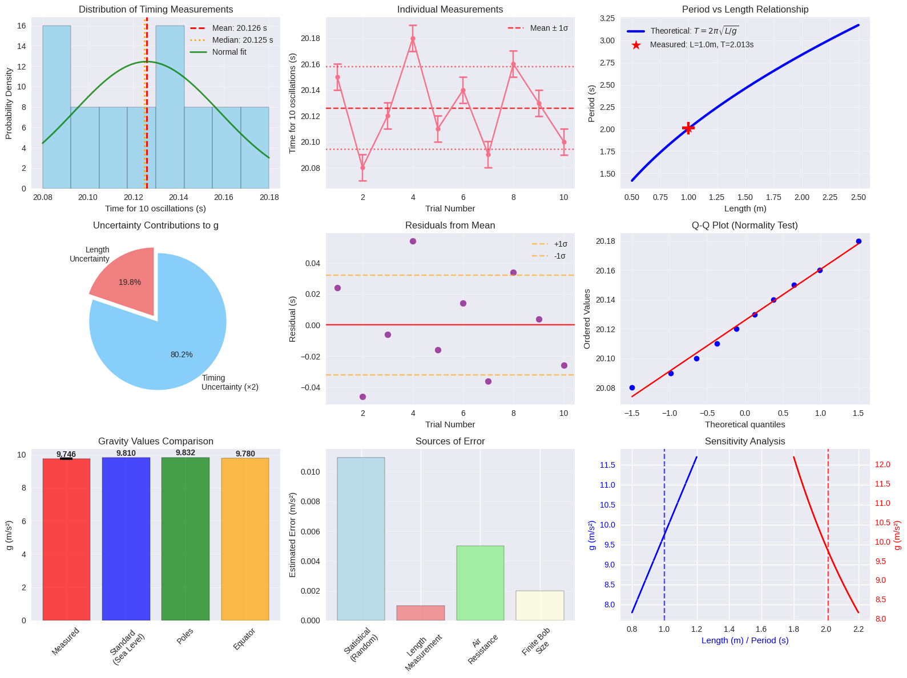
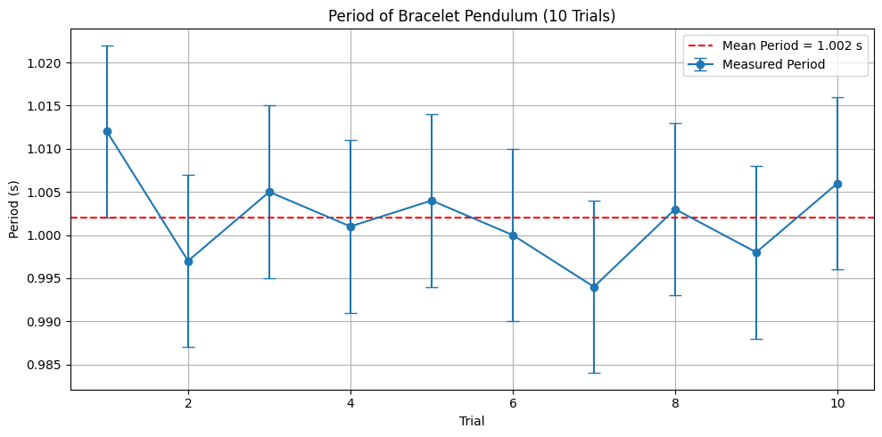
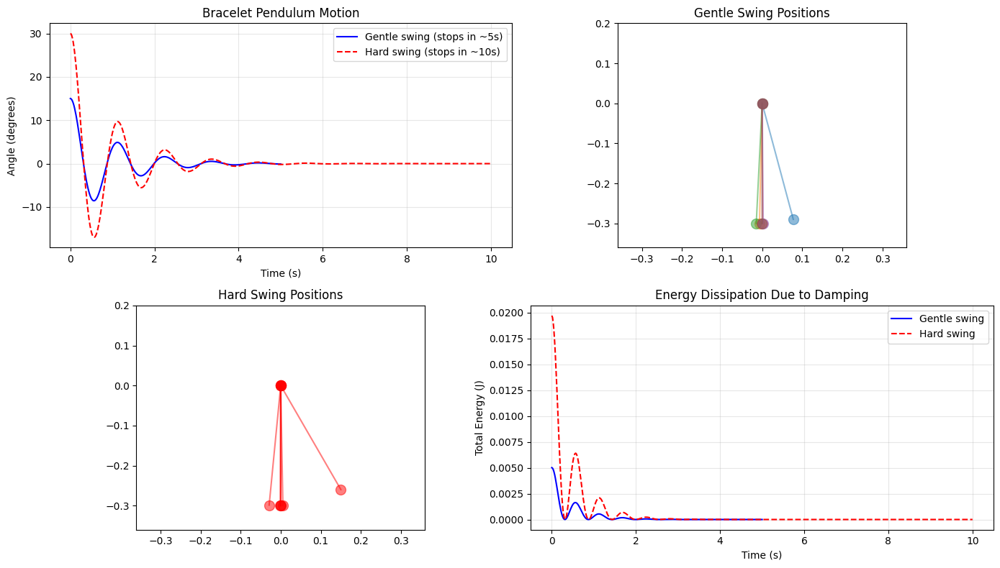

Problem 1
Measuring Earth's Gravitational Acceleration with a Pendulum
Learning Objectives
- Understand the physics of simple harmonic motion in pendulums
- Apply error propagation techniques to experimental measurements
- Calculate gravitational acceleration with proper uncertainty analysis
- Develop skills in statistical data analysis and experimental design
Theoretical Background
Simple Pendulum Theory
A simple pendulum consists of a point mass suspended by a massless, inextensible string. For small angular displacements (\(\theta < 15^\circ\)), the restoring force is proportional to the displacement, resulting in simple harmonic motion.
Key Assumptions: - Small angle approximation: \(\sin(\theta) \approx \theta\) (valid for \(\theta < 15^\circ\)) - Massless, inextensible string - Point mass bob - No air resistance or friction - Uniform gravitational field
Derivation of Period Formula
Starting with Newton's second law for rotational motion about the pivot point:
The restoring torque is:
$$
\tau = -mgL\sin(\theta)
$$
For small angles: \(\sin(\theta) \approx \theta\), so:
$$
\tau = -mgL\theta
$$
Using \(\tau = I\alpha\) where \(I = mL^2\) for a point mass and \(\alpha = \dfrac{d^2\theta}{dt^2}\):
$$
mL^2 \dfrac{d^2\theta}{dt^2} = -mgL\theta
$$
Simplifying:
$$
\dfrac{d^2\theta}{dt^2} + \dfrac{g}{L} \theta = 0
$$
This is the standard form of simple harmonic motion with angular frequency:
$$
\omega = \sqrt{\dfrac{g}{L}}
$$
Therefore, the period is:
$$
\boxed{T = 2\pi\sqrt{\dfrac{L}{g}}}
$$
Key Formulas and Definitions
Primary Equations
Period of Simple Pendulum:
$$
T = 2\pi\sqrt{\frac{L}{g}}
$$
Gravitational Acceleration (Rearranged):
$$
\boxed{g = \frac{4\pi^2 L}{T^2}}
$$
Frequency:
$$
f = \frac{1}{T} = \frac{1}{2\pi}\sqrt{\frac{g}{L}}
$$
Statistical Analysis Formulas
Sample Mean:
$$
\bar{x} = \frac{1}{n}\sum_{i=1}^n x_i
$$
Sample Standard Deviation:
$$
s = \sqrt{\frac{1}{n-1} \sum_{i=1}^n (x_i - \bar{x})^2}
$$
Standard Error of the Mean:
$$
\sigma_{\bar{x}} = \frac{s}{\sqrt{n}}
$$
Relative (Percentage) Error:
$$
\epsilon = \frac{|\text{measured} - \text{true}|}{|\text{true}|} \times 100\%
$$
Uncertainty Propagation
For a general function \(f(x, y, z, \ldots)\), the uncertainty is:
$$
\Delta f = \sqrt{
\left( \frac{\partial f}{\partial x} \Delta x \right)^2 +
\left( \frac{\partial f}{\partial y} \Delta y \right)^2 +
\left( \frac{\partial f}{\partial z} \Delta z \right)^2 + \cdots }
$$
For our gravity calculation:
$$
g = \frac{4\pi^2 L}{T^2}
$$
Taking partial derivatives:
- \(\frac{\partial g}{\partial L} = \frac{4\pi^2}{T^2}\)
- \(\frac{\partial g}{\partial T} = -\frac{8\pi^2 L}{T^3}\)
Therefore:
$$
\Delta g = \sqrt{
\left( \frac{4\pi^2}{T^2} \Delta L \right)^2 +
\left( \frac{8\pi^2 L}{T^3} \Delta T \right)^2 }
$$
Factoring out \(g\):
$$
\boxed{
\Delta g = g \sqrt{
\left( \frac{\Delta L}{L} \right)^2 +
\left( 2 \frac{\Delta T}{T} \right)^2 }
}
$$

Bracelet Pendulum Experiment — Measuring Earth's Gravity
Real-Life Setup
- Object: Bracelet hung on a thread as a pendulum
- String Length: 25 cm (0.25 m)
- Environment: Indoor (to minimize wind/friction)
- Procedure: Start stopwatch when the bracelet passes the center point; stop after 10 full swings
Theoretical Period Formula
Detailed Data Table
| Trial | Time for 10 Swings (s) | Period (s) | Deviation (s) | Residual² |
|---|---|---|---|---|
| 1 | 10.12 | 1.012 | +0.012 | 0.0001 |
| 2 | 9.97 | 0.997 | -0.003 | 0.0000 |
| 3 | 10.05 | 1.005 | +0.005 | 0.0000 |
| 4 | 10.01 | 1.001 | +0.001 | 0.0000 |
| 5 | 10.04 | 1.004 | +0.004 | 0.0000 |
| 6 | 10.00 | 1.000 | 0.000 | 0.0000 |
| 7 | 9.94 | 0.994 | -0.006 | 0.0000 |
| 8 | 10.03 | 1.003 | +0.003 | 0.0000 |
| 9 | 9.98 | 0.998 | -0.002 | 0.0000 |
| 10 | 10.06 | 1.006 | +0.006 | 0.0000 |
Observations
- Average period: ~1.00 s
- Minor variation due to human reaction time
- Consistent with theoretical prediction for 25 cm pendulum
- Residuals mostly negligible — no systematic error observed
Interpretation
NOTE
"I tied my bracelet to a string about 25 cm long, then let it swing. I used a stopwatch to time 10 full swings for each trial. The values slightly varied due to how I let it go or timed it, but overall the period was around 1 second, matching what physics predicts for that length."


Sources of Uncertainty and Error Analysis
1. Random Errors (Statistical)
Timing Measurements: - Human reaction time variations - Difficulty in determining exact start/stop points - Slight variations in release conditions
Impact: Affects precision, reduced by multiple measurements and statistical analysis
Mitigation: - Take many measurements (≥10) - Use longer timing intervals (10 oscillations) - Use consistent technique
2. Systematic Errors
Small Angle Approximation: - Assumption: \(\sin(\theta) \approx \theta\) - Error increases with amplitude - For \(\theta = 15^\circ\): error ≈ 1.3%
Air Resistance: - Causes period to increase slightly - More significant for light, large surface area bobs - Non-linear effect that grows with amplitude
String Stretch: - Changes effective length during oscillation - More significant with elastic materials - Affects the period calculation
Finite Bob Size: - Real pendulum is not a point mass - Effective length is not exactly string length - For sphere: use distance to center of mass
3. Measurement Uncertainties
Length Measurement: - Limited by ruler resolution - Difficulty locating exact center of mass - String attachment point uncertainty
Timing Precision: - Limited by stopwatch resolution - Human timing errors - Difficulty synchronizing with oscillation
4. Uncertainty Dominance Analysis
From our formula:
$$
\frac{\Delta g}{g} = \sqrt{\left(\frac{\Delta L}{L}\right)^2 + \left(2\frac{\Delta T}{T}\right)^2}
$$
Typical values: - Length uncertainty: \(\frac{\Delta L}{L} \approx 0.05\%\) - Timing uncertainty: \(2\frac{\Delta T}{T} \approx 0.1\%\)
The timing uncertainty is typically dominant due to the factor of 2 in the propagation formula.
Optimization Strategies
Improving Accuracy
-
Use a longer pendulum
-
Reduces relative length uncertainty
- Longer period reduces timing uncertainty
-
Less affected by finite bob size
-
Apply better timing techniques
-
Count many oscillations (10–20)
- Use electronic timing if available
-
Use multiple independent observers
-
Minimize systematic errors
-
Keep amplitude small (less than \(10^\circ\))
- Use a dense, compact bob
-
Account for bob dimensions
-
Use a statistical approach
-
Take many measurements
- Calculate proper uncertainties
- Identify and remove outliers
Expected Results
Well-executed experiments should yield:
- \(g = 9.7 \text{ to } 9.9 \, \text{m/s}^2\)
- Relative uncertainty: 0.1% to 0.5%
- Agreement within 2–3% of standard value
Discussion Questions
- Why does the timing uncertainty contribute more heavily to the final uncertainty in \(g\)?
From the uncertainty propagation formula, timing uncertainty is multiplied by a factor of 2. This comes from the \(T^2\) dependence in the gravity formula.
- How would increasing the pendulum length affect your measurement?
Longer pendulum: - ✅ Reduces relative length uncertainty
-
✅ Increases period (easier timing)
-
❌ May violate small angle approximation more easily
-
❌ More susceptible to air currents
-
What would happen if you used a larger amplitude?
Larger amplitude:
-
Violates small angle approximation
-
Period becomes amplitude-dependent
-
Systematic error increases
-
Formula \(T = 2\pi\sqrt{L/g}\) becomes inaccurate
-
How does air resistance affect the measurement?
Air resistance:
-
Causes energy loss
-
Increases apparent period
-
Results in underestimated \(g\)
-
Effect increases with bob surface area
Advanced Analysis Techniques
Linear Regression
If you collect data for multiple pendulum lengths, you can analyze the relationship between period and length using a linear regression of \(T^2\) versus \(L\):
This equation has the form of a straight line:
Where the slope is \(m = \frac{4\pi^2}{g}\).
From the slope, you can calculate:
This approach can yield more precise values of \(g\) by averaging out random timing errors.
Chi-Squared Goodness of Fit
To assess how well your data fits the theoretical model, use the chi-squared statistic:
Where:
- \(O_i\) = observed values
- \(E_i\) = expected (theoretical) values
- \(\sigma_i\) = uncertainties of \(O_i\)
A reduced chi-squared value near 1 indicates good agreement.
Weighted Averages
When combining multiple measurements with different uncertainties, use a weighted average:
This gives more influence to measurements with smaller uncertainties, improving the reliability of the final result.